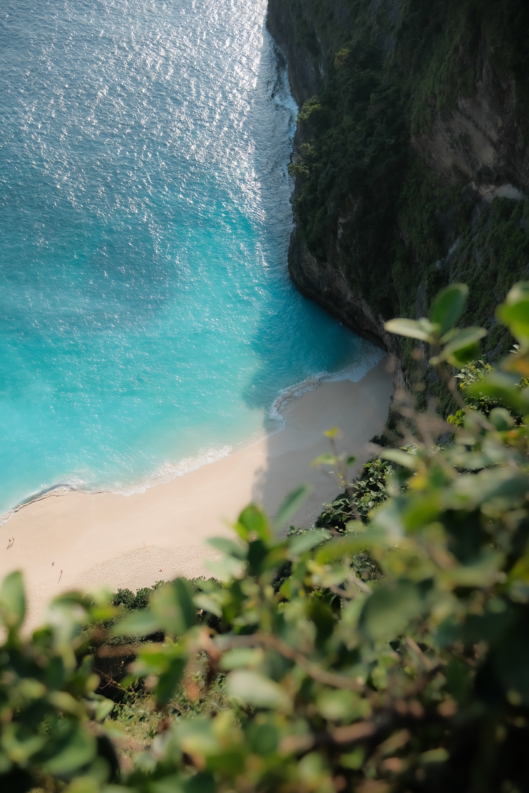
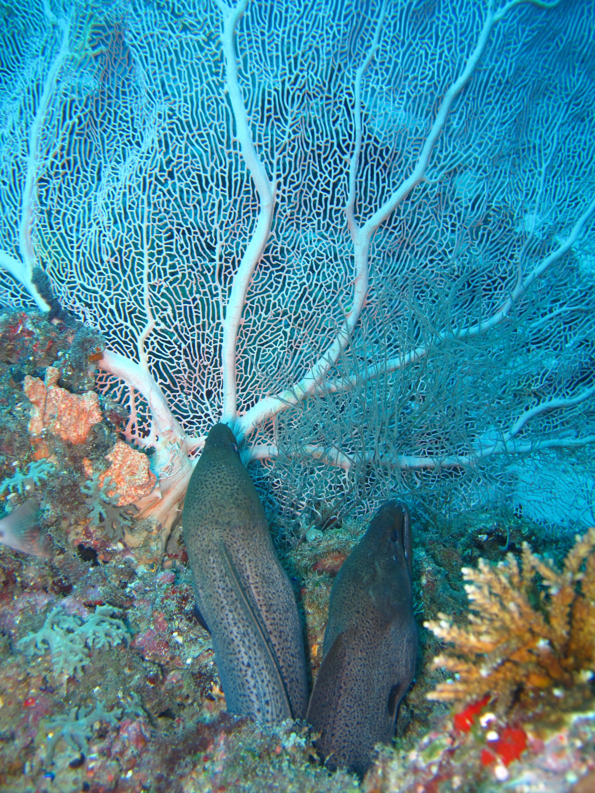
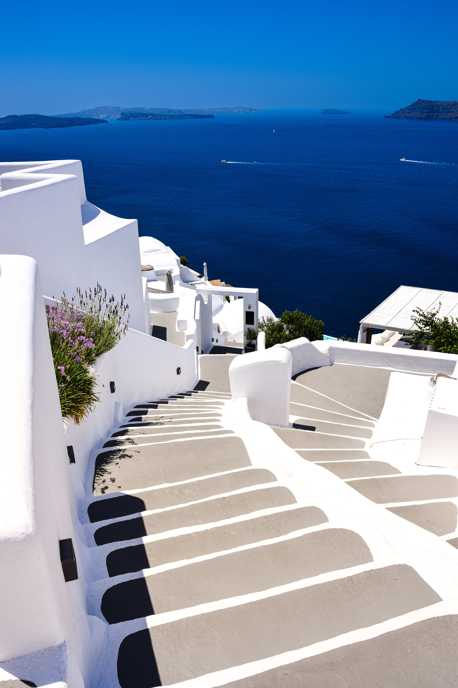
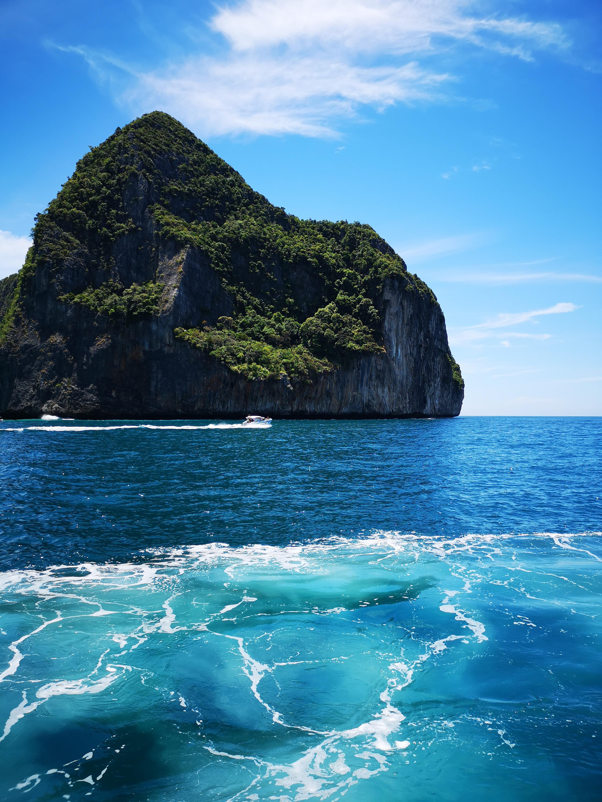
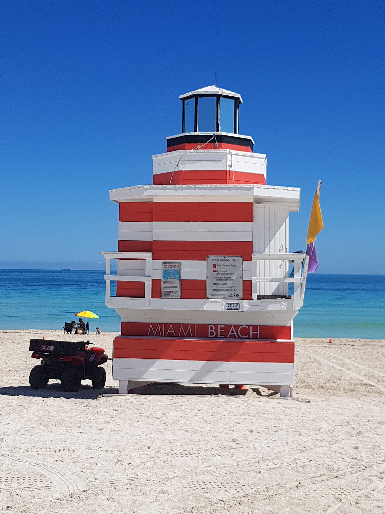
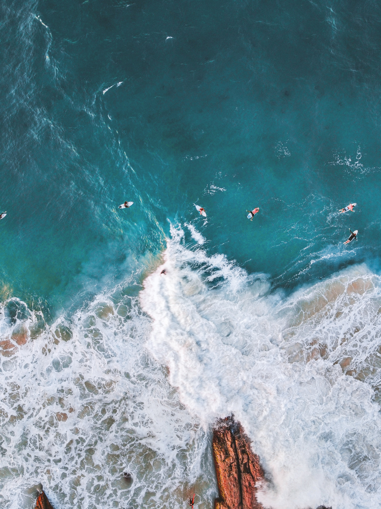

Reisemål
Utforsk ulike reisemål!


Strand-destinasjoner
Strender er blant verdens mest populære reisemål, og det er lett å forstå hvorfor. Det er noe universelt tiltrekkende ved kombinasjonen av sol, sand og hav – enten man søker aktiv moro med surfing og vannsport, eller bare vil ligge i ro og lytte til bølgene. Kystlinjer finnes i alle varianter, fra dramatiske klippestrender til brede, flate sandflater med turkist vann, og hver av dem tilbyr sin egen stemning og opplevelse. For mange er en strandreise ikke bare en ferie, men en måte å koble av fra hverdagen og finne tilbake til noe enkelt og avslappende.

Bali, Indonesia
En tropisk øy med vakre strender, surfemuligheter og avslappende atmosfære.

Maldivene
Krystallklart vann og hvite sandstrender gjør dette til et perfekt sted for luksus og ro.

Santorini, Hellas
Unike strender med vulkansk sand med fantastisk utsikt og solnedganger.

Phuket, Thailand
Populær destinasjon med livlige strender, god mat og spennende aktiviteter.

Miami, USA
Kombiner strandliv med storby – kjent for lange strender og livlig stemning.

Gold Coast, Australia
Perfekt for surfing med lange strender og moderne byliv rett ved havet.